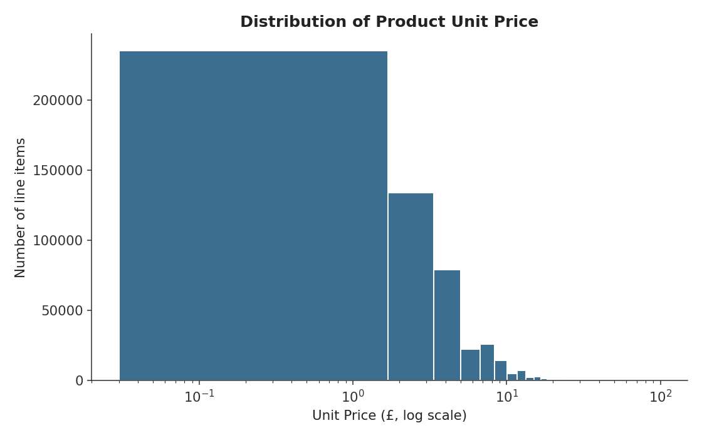
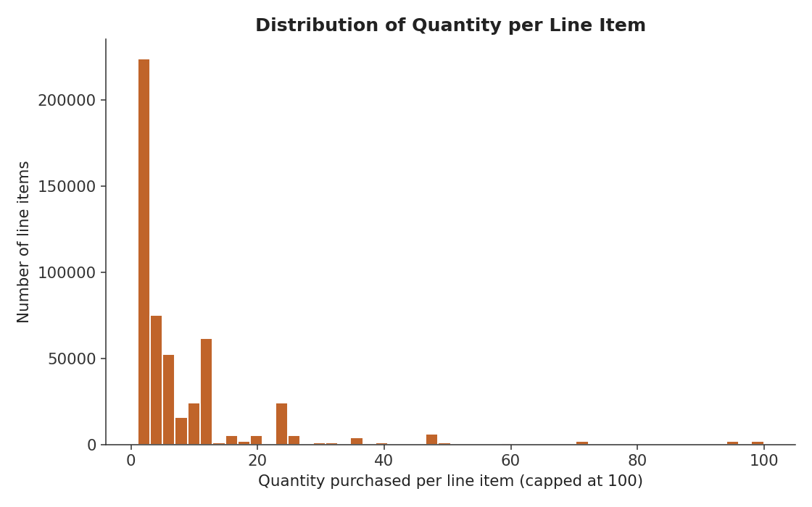
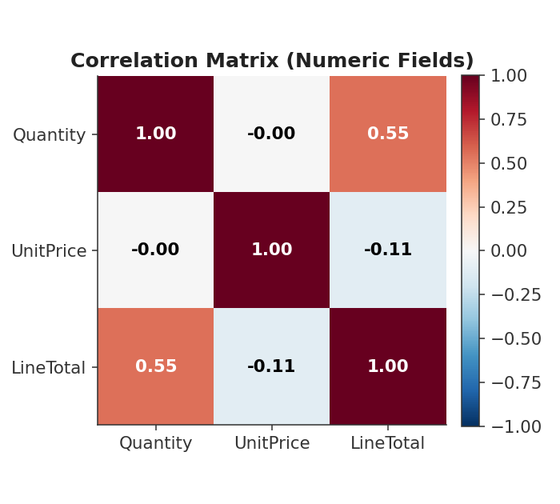
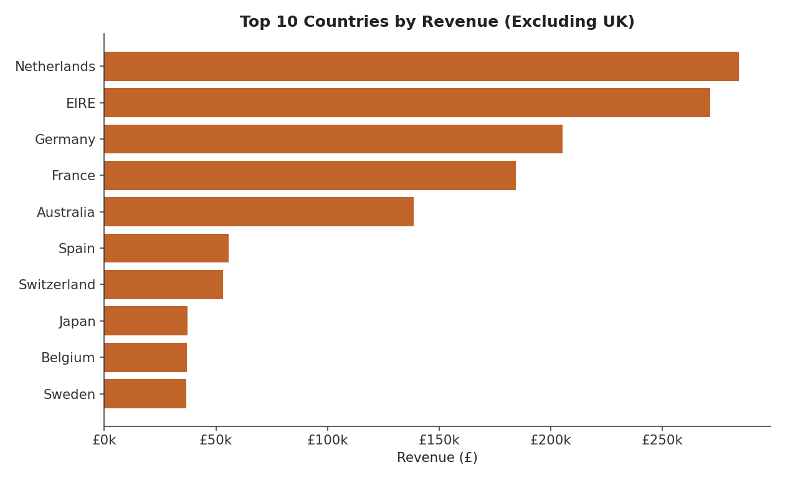
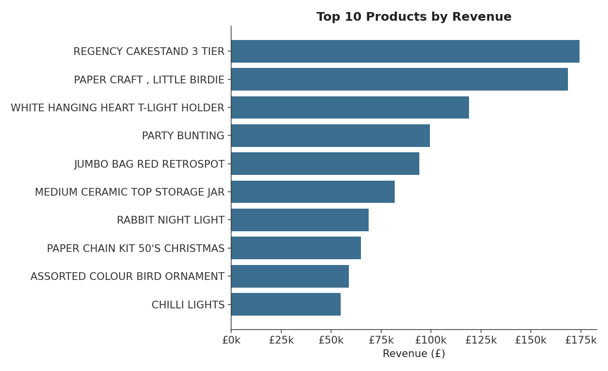
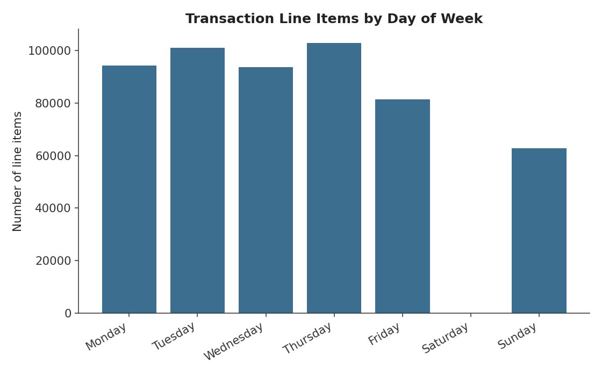

case_study.online_retail
Online Retail Sales Analysis
A UK-based online giftware retailer had 536,500 transaction records and no way to know which customers or products drove revenue, or whether the business was healthy. This project cleans that data, analyzes it end to end, and turns it into six specific business recommendations.
executive_summary
A business with data, but not insight
The retailer had a raw transaction log going back to December 2010, one row per invoice line. That log could tell you what happened, but not what it meant: which customers mattered most, which products were worth promoting, whether sales were growing, or whether the data could even be trusted in the first place.
After cleaning, 536,388 of the original 536,500 rows remained. The analysis found a business that is highly seasonal, with a sharp pre-Christmas revenue spike; customer-concentrated, with the top 20% of customers generating roughly three-quarters of revenue; and heavily UK-dependent, at over 91% of transactions. A long-tail product catalog means no single item dominates. Two gaps stood out: 12.6% of revenue can't be tied to any customer, and returns account for a material 8.7% of gross revenue.
Every step below, cleaning, analysis, findings, and recommendations, is reproducible and documented in the linked GitHub repository.
business_context
Objectives
- Produce a clean, trustworthy dataset, with every cleaning decision documented and reproducible.
- Understand sales patterns: revenue trends, seasonality, and best- and worst-performing products and countries.
- Understand customer behavior: who the valuable customers are, and how purchase frequency and spend are distributed.
- Surface specific, actionable recommendations tied to evidence, not general advice.
- Document the workflow so any analyst could reproduce every step without guessing.
data_sources
What the data looked like going in
Sourced from the UCI Machine Learning Repository's Online Retail dataset, a widely used public benchmark, so results can be sanity-checked against existing analysis.
| Metric | Value |
|---|---|
| Rows (line items) | 536,500 raw → 536,388 cleaned |
| Columns | 10 raw → 12 cleaned |
| Unique customers | 4,372 |
| Unique products | 3,940 |
| Countries | 38 |
| Date range | 1 Dec 2010 – 9 Dec 2011 |
Known issues before cleaning
CustomerIDmissing for about 25% of rows.Quantitynegative for 10,469 rows (returns and cancellations).- Two different, inconsistent signals for a cancelled order: a "C"-prefixed invoice number versus a negative quantity, disagreeing on 1,218 rows.
- Non-product stock codes (postage, bank fees, manual adjustments) mixed in with real products.
- A handful of implausible values, including a negative unit price.
data_preparation
Flag, don't delete
The guiding principle throughout: preserve real business data wherever possible, and delete only when a row couldn't be trusted or interpreted at all. Only 112 rows were removed, 0.02% of the dataset.
Checked for exact duplicate rows
None found, confirming no double-counted transactions.
Removed two redundant duplicate columns
One was a byte-for-byte copy of the description field, the other a mostly-empty leftover formula column. Neither carried new information.
Standardized text fields
Trimmed whitespace from 112,601 rows and normalized product code casing, invisible issues that would otherwise silently break groupings and joins.
Removed rows that couldn't be trusted
109 rows with no product name and 3 rows with a logically impossible negative price, both untraceable to a real transaction.
Fixed data types
Converted CustomerID from a float to a nullable integer, since it's an identifier, not a quantity.
Reconciled the two conflicting return signals
Consolidated invoice prefix and negative quantity into one explicit IsReturn flag, preserving every row instead of silently dropping the ones that failed a single rule.
Flagged rather than deleted the ambiguous rows
Non-product stock codes (postage, fees) and the 134,900 rows missing a CustomerID were flagged, not removed, keeping roughly a quarter of the business's revenue intact for revenue-level analysis.
Engineered LineTotal and re-checked for duplicates
Calculated quantity × unit price once, correctly, since it's needed across almost every later analysis. A final duplicate check confirmed the cleaning steps introduced none.
| Metric | Before | After |
|---|---|---|
| Rows | 536,500 | 536,388 |
| Columns | 10 | 12 |
Missing CustomerID | 134,900 | 134,788 (flagged, not deleted) |
Missing Description | 109 | 0 |
| Negative price rows | 3 | 0 |
exploratory_analysis
What the numbers show
Every numeric field is heavily right-skewed: mean quantity per line item is 9.6 versus a median of 3, a clear sign of a small number of extreme values (bulk orders, manual entries) sitting alongside typical small purchases.






key_findings
Nine findings, each backed by a number
Revenue grew about 19.6% quarter over quarter into Q4 2011, consistent with seasonal demand ahead of Christmas gift-buying.
November 2011 alone generated about 101% more revenue than the average of all other full months, a sharp, concentrated peak rather than a gradual ramp.
Returns erased about 8.7% of gross product revenue, roughly £899k against £10.37M in gross sales.
The top 20% of identified customers generated about 74.6% of revenue, close to a classic 80/20 pattern.
65.3% of identified customers made more than one purchase, a strong repeat rate for a gift retailer.
International sales account for only about 14.7% of revenue, with the Netherlands, Ireland, and Germany as the leading markets.
No single product dominates: the top 10 products account for only about 9.5% of total revenue out of 3,940 distinct products.
About 12.6% of revenue, £1.20M, is tied to transactions with no CustomerID, limiting loyalty tracking and lifetime-value calculations for that slice of the business.
Postage and fee line items total £709k across the dataset, a reminder that raw revenue totals overstate actual product performance unless separated out.
business_impact
What the business should do about it
Business actions, not technical tasks. Each one is tied to a specific finding above.
Plan inventory and staffing around the confirmed Q4 seasonal spike, scaling up supplier lead times and customer service starting in September or October, not November.
Launch a loyalty or retention program targeted at the top 20% of customers. A small improvement in retention for this group has an outsized effect on total revenue.
Investigate the return rate at the product level rather than treating 8.7% as normal. If concentrated in a few products, fixing the listings could recover a meaningful chunk of that £899k.
Require or incentivize customer identification at checkout to close the 12.6%-of-revenue data gap that currently blocks personalized marketing and churn prevention.
Treat international expansion as a deliberate growth lever. A focused push in the Netherlands, Ireland, and Germany is likely more productive than spreading effort across 38 countries.
Protect the long-tail catalog strategy rather than over-investing in a few "hero" products. The business's strength is breadth, not a handful of bestsellers.
honest_limits
What this analysis can't tell you
Being transparent about limitations is what separates a credible analysis from an overconfident one.
challenges
Where the analysis has limits
- A quarter of transactions have no
CustomerID, so customer-level conclusions describe only the identified three-quarters of the business. - Source documentation was thin. Several cleaning decisions had to be inferred from the data itself rather than confirmed against a definition.
- Extreme outliers in quantity and price required judgment calls about error versus legitimate rare event.
- The "is this a return" signal disagreed with itself in 1,218 rows, a source-system issue that isn't fully resolvable downstream.
- This was a single-pass analysis, not an exhaustive product-code audit across 3,940 codes.
- Some country-level return rates are based on very small transaction counts and aren't statistically reliable.
- The UK represents over 91% of transactions, so any pattern found across the other 37 countries is directionally useful at best.
future_improvements
What comes next
- Require customer ID capture at checkout and extend data collection beyond 13 months for real year-over-year comparison.
- Fix data quality at the source: one consistent return flag, no redundant columns, a canonical product-code mapping.
- Build a live dashboard so revenue, returns, and top-customer metrics update automatically.
- Automate the cleaning pipeline so every new batch of data runs through the same documented rules.
- Build a formal RFM customer segmentation model to make the loyalty-program recommendation precisely targetable.
- Deploy a churn or next-purchase prediction model for the high-value repeat-customer segment.
- Add external benchmark data, such as UK retail indices or exchange rates, to explain why revenue moves the way it does.
lessons_learned
What this project reinforced
Flagging instead of deleting turned out to matter more than expected. Every ambiguous row (missing customer IDs, disputed return status) stayed in the dataset with an explicit flag, which meant no later analysis had to guess whether it was looking at the whole business or a filtered slice of it. The other recurring lesson was to check for partial time periods before trusting any seasonal read: December 2011 looked like a revenue collapse until it turned out the dataset simply stopped on the 9th. Thin source documentation was the hardest constraint. When a data dictionary doesn't exist, every inferred rule needs to be written down as clearly as a confirmed one, so the next analyst can see where judgment was applied.
downloads_and_repository
See the full work
Every file referenced in this case study, including the raw and cleaned datasets, source code, and full documentation, is in the public repository.
More case studies are in progress.
Get in touch